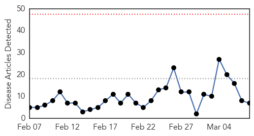
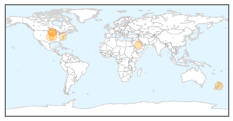
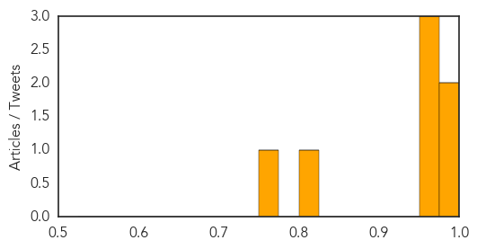

Influenza
30-Day Web Trend
0 alerts, 0 warnings

30-Day Twitter Trend
0 alerts, 0 warnings
Article Locations
Article Confidences
Top Articles:
- 0.989
- The publicly funded influenza vaccine delayed
- 0.983
- Ex-VP Walter Mondale Hospitalized At Mayo Due To Influenza : LIFE : Tech Times
- 0.960
- 10 severe flu cases reported
- 0.957
- MDA implementing response to contain, eliminate avian influenza
- 0.951
- Officials hopeful that avian flu virus will be contained
- 0.821
- High risk groups easy victims of H1N1
- 0.751
- March 7, 2015 Archives
Top Tweets:
-
No tweets found for Mar 08, 2015
Hepatitis
30-Day Web Trend
9 alerts, 5 warnings
30-Day Twitter Trend
0 alerts, 0 warnings

Article Locations

Article Confidences

Top Articles:
Top Tweets:
-
No tweets found for Mar 08, 2015